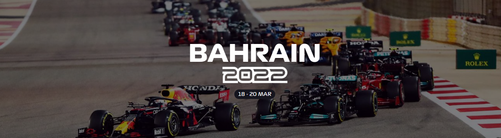
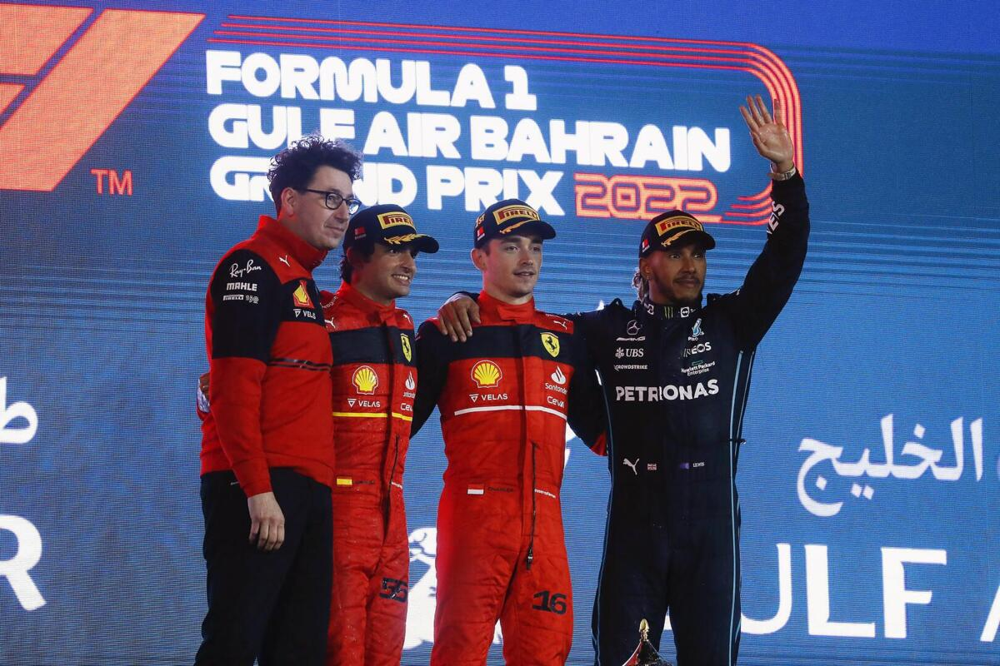

|  |
La Temporada 2022 de la Fórmula 1 (F1) por fin arrancó y comenzó con máximas emociones en lo que promete ser una gran campaña; el piloto Charles Leclerc, de Ferrari, fue el gran ganador del Gran Premio de Baréin.
El podio lo completaron Carlos Sainz de Ferrari y Lewis Hamilton de Mercedes, quienes finalizaron segundo y tercero, respectivamente; Max Verstappen no pudo iniciar la defensa de su título mundial del serial con victoria.
El volante neerlandés no tuvo un buen inicio con Red Bull, pues abandonó la carrera cuando faltaban pocas vueltas para terminar el circuito de Sakhir y el mexicano Sergio Checo Pérez sufrió problemas con su motor, cuando parecía que se subiría al podio en tercer lugar; ambos abandonaron la carrera.
Los que impresionaron fueron los Ferrari, ya que, en la clasificación del sábado, tanto Charles Leclerc como Carlos Sainz hicieron gala del poder de su motor y dejaron claro que serán uno de los rivales más duros en la Temporada 2022 del Gran Circo, ya que lograron el 1-2 el día de hoy.
Como sucedió en la clasificación, el monegasco Charles Leclerc y Max Verstappen, actual campeón de la F1, pelearon la cima en el circuito de Sakhir durante la mayoría vueltas que duró el inicio de la campaña.
El de Red Bull fue agresivo en las curvas par tratar de adelantar al de Ferrari, pero el volante del equipo italiano utilizó bien el alerón trasero móvil para no dejarse rebasar. Por su parte, Lewis Hamilton, volante de Mercedes, tuvo problemas con sus llantas y se quejó del agarre de sus neumáticos.
